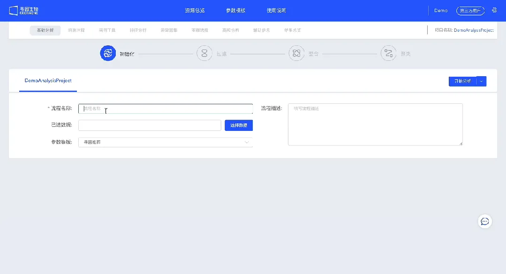
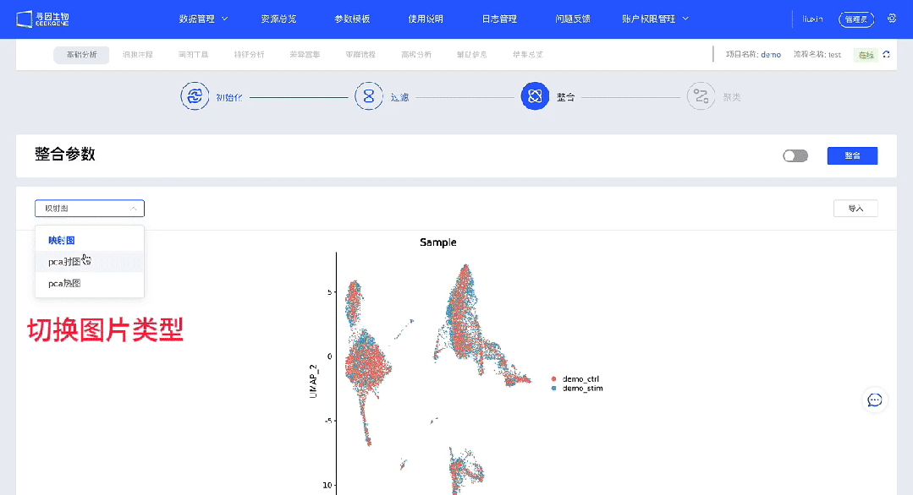
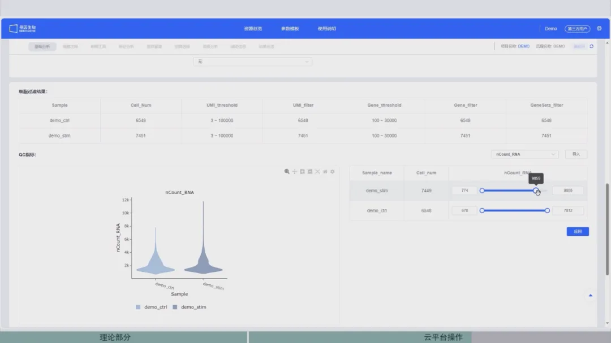

零代码单细胞| 数据质控
原文：https://mp.weixin.qq.com/s?__biz=MzAwMzIzOTk5OQ==&mid=2247510401&idx=2&sn=ee7fde2db7471bc5622b73128fc630e5&chksm=9b3cd0d1ac4b59c7cb4f01cae5387488428bced24586241d293e0425e912326ae59ae7330c94#rd 合集：单细胞云平台
导语 .
不用编程快速解决单细胞分析问题？
SeekSoul Online单细胞云平台应运而生！让我们对SeekSoul Online单细胞云平台说：‘Hello, new world!’
云 平台访问链接：https://seeksoul.online/t_static/Biomamba/Biomamba.html
各位同学需要联系您的专属在线客服，获取demo数据后，进行操作学习。

今天咱们正式进入主餐部分，请拿起您的刀叉（划掉）鼠标：一起学习如何做好单细胞分析的基石--数据质控。
** **
第二讲：数据质控，有云平台就够了****
精华复现
一键化分析流程，标准分析全完成

云平台支持多种格式数据上传。 无论是矩阵文件还是已经做完标准分析的文件，都可以方便地导入到云平台进行分析。
云平台一键化分析流程。 您只需点击一个按钮，云平台即可自动执行一系列标准分析步骤，包括过滤、降维、聚类、细胞注释和差异表达等。简化复杂分析，节省您的时间精力。
参数功能全都有，个性化需求全满足

云平台关键参数全覆盖。 您能够根据不同的研究目的和数据类型进行定制化分析，满足个性化的需求。
云平台多种算法功能集合， 并且每个模块支持反复或者回溯调整，为您提供了更大的灵活性。
云平台操作练习，实践才是硬道理

** **
理论知识固然重要，但实际操作是学习的关键。
云平台培训班手把手教您学会分析流程，每个参数的具体含义都让您清晰明了。

想要了解更多课程及活动信息，请点击 《告别流水式代码，送您一个单细胞生信分析技能，文末有福利~》